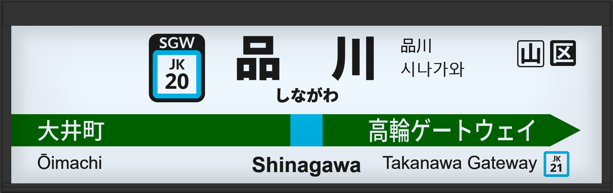

| ←大井町 | ■ 京浜東北線 | 高輪ゲートウェイ→ |
|---|
1990年代に通称初期型ATOS放送を導入。
1998年頃に初期型ATOS放送を導入。（路線導入）
2006年2月に旧型に更新され、接近放送の文面が「黄色い線まで～」になる。
2009年12月に常磐改良型に更新される。
2016年2月に宇都宮型に更新され、3番線の声優が津田英治氏から田中一永氏に交代する。
2018年6月には横浜方面のホームが4番線から5番線へ移動
2019年11月には大宮方面3番線から4番線へ移動
2020年2月にはオリンピック開催に向けて、山手線とともに宇都宮改良型へされ、接近放送の文面が「黄色い点字ブロックまで～」になる。
| 旧3 | ■ 京浜東北線 大宮方面 |
3番線次発予告 3番線接近放送 |
初期型導入前でした。 放送は「」です。 |
|---|---|---|---|
| 旧4 | ■ 京浜東北線 大船方面 |
4番線次発予告 4番線接近放送 |
初期型導入前でした。 放送は「」です。 |